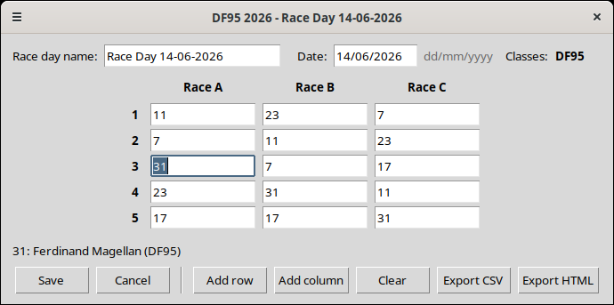
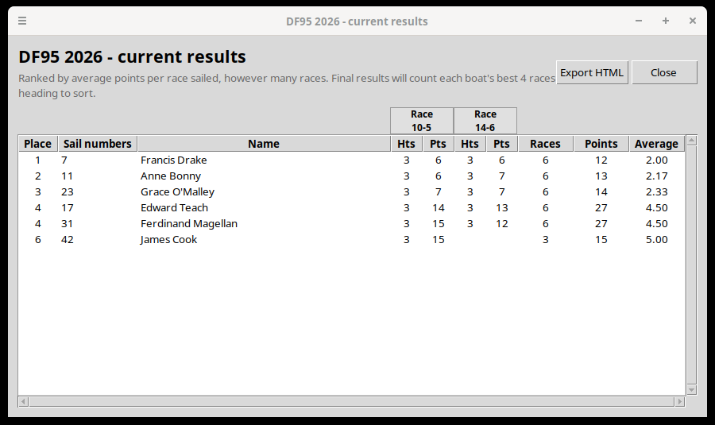
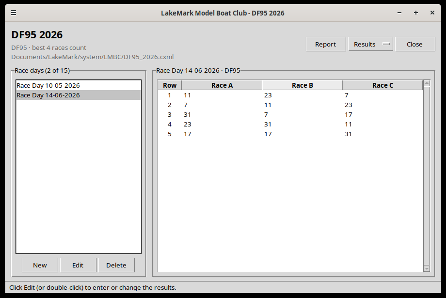
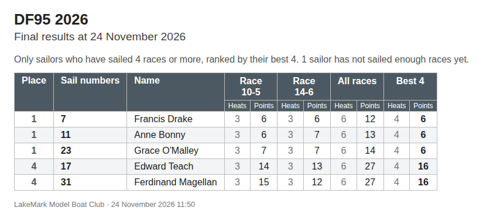

Made for the race manager
Written by a club race manager for the job as it is really done: the finishing order is written down on paper at the lake, then typed in afterwards, usually at home. A season of race days, a few races each day, and the results to send round.
Quick to enter
Each race is a column of sail numbers in finishing order, typed straight from the sheet. As you type, LakeMark shows whose boat it is, and marks a number it does not know.
Results worked out
Current results during the season, ranked by average, and final results counting each sailor's best races. Click a heading to sort.
Web pages to share
One click makes a tidy page of a race day or the results, with the club's name and logo, ready to email, put on the club website or print.
On a stick, or installed
Run it straight from a USB stick on any Windows or Linux computer, or install it on your own. Several clubs and boat classes, each kept apart.
See it at work
These are from the sample club that comes with LakeMark.




Not quite what you need?
LakeMark grew out of one club's way of racing, and it is still growing. If your club scores differently, races other classes, or would like something LakeMark does not do yet, please say. Ideas from other clubs are welcome.
Email the author, Paul Golder, at paul.a.golder@gmail.com with how your club does things differently, and he will see whether he can set up a version to suit your needs. This offer is for clubs and other non-commercial use.
Underneath, LakeMark is open source: the source code is on GitHub for anyone handy with Python who would like to adapt it themselves.
Try it before you type a thing
The first time LakeMark starts, it opens a sample club, the LakeMark Model Boat Club, with a DF95 competition of two race days already sailed. Look round, change the results, make the web pages: nothing in it is real.
Its six sailors are pirates and navigators from history. Blackbeard and Grace O'Malley are doing their best, but Drake is ahead.
- 7 Francis Drake
- 11 Anne Bonny
- 17 Edward Teach
- 23 Grace O'Malley
- 31 Ferdinand Magellan
- 42 James Cook
Get LakeMark
Pick the way that suits you. Each download is the newest version.
Windows
- Download the program.
- Double-click it. If Windows says it protected your PC, click More info, then Run anyway.
Linux
- Download the program.
- Right-click it, open Properties, and allow it to run as a program.
- Double-click it.
A USB stick
- Use a stick of at least 100 MB, formatted exFAT.
- Download the stick zip and unzip it into the top of the stick.
- It runs on Windows and Linux, and can install LakeMark on a Windows computer. Handy where downloading programs is blocked.
New to it? The quick-start guide (PDF, 5 pages) walks through everything, and it is on every stick too. Your clubs and results stay on your own computer, in Documents/LakeMark, and a new version leaves them alone.